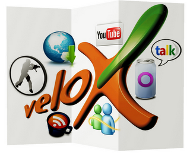
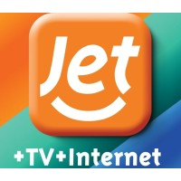
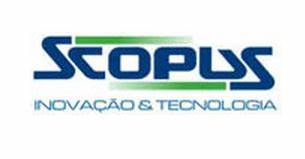
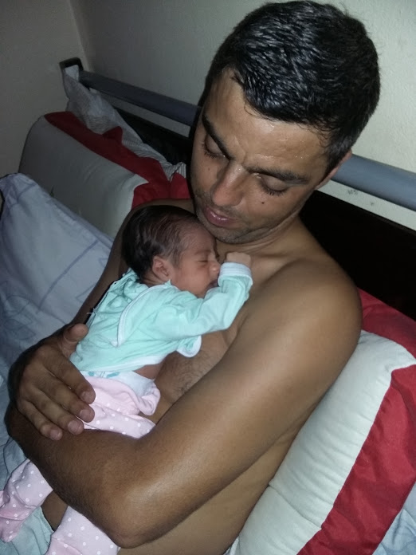
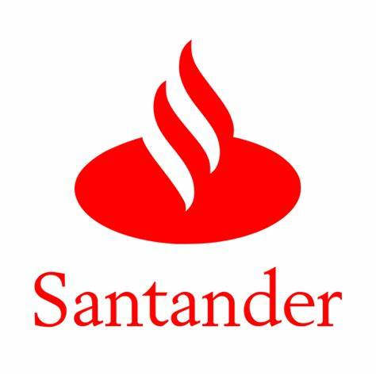
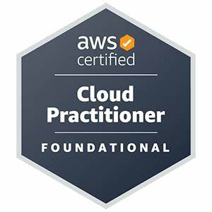
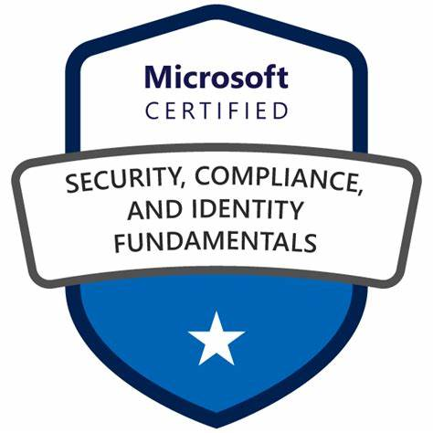

<!DOCTYPE html>
<html lang="pt-BR"></html>
<head>
    <meta charset="UTF-8">
    <meta name="viewport" content="width=device-width, initial-scale=1.0">
    <title>Linha do Tempo</title>
    <link rel="stylesheet" href="linhadotempo.css">
</head>

<body>

    <h1 style="line-height: 2;">Linha do tempo - Em desenvolvimento</h1>
   
    <div class="container">
        <div class="content">
            <h2>2004 - 2008 Telemar/Oi</h2>
            
            <p>Iniciei minha carreira em telecomunicações, onde tive a oportunidade com início da internet banda larga Velox(OI) atuar na instalação e manutenção (Hardware, Software e internet) com tecnologia ADSL (Linha Digital Assimétrica para Assinante), computadores com processadores AMD K6, Intel Pentium III e Celeron. Era novidade e a responsabilidade imensa, ao qual lidamos com a ansiedade do cliente, apresentação do novo produto e soluções de problemas nunca vivenciado</p>
        </div>
    </div>
    <div class="container">
        <div class="content">
            <h2>2008 - 2009 ACOM TV SA</h2>
            
            <p> Com a chegada da ACOM TV SA em Juiz de Fora, trouxe o novo sistema MMDS (Multichannel Multipoint Distribution Service) uma tecnologia de transmissão de dados sem fio que utilizava frequências UHF para fornecer acesso à internet e programação televisiva em áreas onde o cabeamento estruturado não era viável economicamente. Ele funcionava transmitindo sinais de um uplink para um satélite, que então enviava os sinais para um headend, processando e distribuindo-os para os assinantes via antenas especiais.</p>
        </div>
    </div>
    <div class="container">
        <div class="content">
            <h2>2010 - 2015 Scopus/Bradesco</h2>
            
            <p>Meu início na área de tecnologia da informação foi em um projeto do Governo de Minas Gerais pelo FNDE (Fundo Nacional de Desenvolvimento da Educação), instalando e configurando multi-estações Linux nas escolas. Projeto temporário que atuei pela empresa Scopus (Bradesco) e devido ao sucesso, fui convidado a fazer parte do time para novos projetos. Alguns desses projetos estão na aba "PROJETOS" página inicial.</p>
            <p>Projetos e Atividades Realizadas pelo Bradesco: </p>
            <p>Rollout de Roteadores Cisco (1900 para 2900) – Projeto Bradesco  
                Atualização da infraestrutura de redes para garantir maior desempenho e estabilidade das operações 
                bancárias.  
            <p> Rollout de Switch – Projeto Correios Minas Gerais  
                Modernização da infraestrutura de conectividade para otimizar a comunicação entre as unidades do Correios.  
            <p>Rollout de Roteadores 3COM – Lotéricas da Caixa Econômica Federal  
                Implantação de novos equipamentos para garantir segurança e eficiência na comunicação entre os terminais.  
            <p>Migração de Windows 7 para 10 nas agências do Bradesco  
                Atualização de sistemas operacionais e melhorias no hardware para suportar novas funcionalidades.  
            <p>Plantão 24x7 para atendimento à comunicação dos caixas eletrônicos  
                Monitoramento e suporte contínuo às operações bancárias do Bradesco, Caixa Econômica e Santander</p>
        </div>
    </div>
    <div class="container">
        <div class="content">
            <h2>Fevereiro 2015 Me tornei Pai </h2>
            
            <p> Um momento em minha vida pessoal que foi necessário atenção. Nascimento de minha filha Valentina, na época estava atuando em diversos projetos e com a responsabilidade de atender as demandas do Bradesco (Scopus), uma pausa para cuidar da minha filha e posteriormente retornei ao trabalho com a mesma dedicação e responsabilidade.
            </p>
        </div>
    </div>
    <div class="container">
        <div class="content">
            <h2>2018 - 2019 CAIXA Econômica Federal</h2>
            
            <p>Projeto: Mudança e Retorno da Agência Manoel Honório (Infraestrutura) 
            <p>Objetivo: Viabilizar a obra de reparo na agência, garantindo que toda a infraestrutura fosse transferida para um novo local temporário e posteriormente restaurada.  
            <p>Principais atividades realizadas:  
                Desmontagem e reinstalação do cabeamento estruturado, assegurando conectividade estável para todos os serviços bancários.  
            <p>Migração e configuração de roteadores e switches, garantindo a segurança e integridade dos dados.  
            <p>Transporte, reconfiguração e testes de computadores, impressoras e caixas eletrônicos.  
            <p>Realocação e verificação dos sistemas de CFTV e alarmes, garantindo a segurança do ambiente bancário.  
            <p>Gestão da infraestrutura para garantir operacionalidade total antes, durante e depois da mudança.  
            <p>Durante esse projeto, priorizei a organização, eficiência e segurança, assegurando que os serviços bancários fossem mantidos com o menor impacto possível para clientes e funcionários. <p>Minha atuação envolveu planejamento, execução e suporte técnico, garantindo uma transição ágil e bem-sucedida. </p>
        </div>
    </div>
    <div class="container">
        <div class="content">
            <h2>2020 - Banco Santander</h2>
            
            <p>Projeto de Troca de Switch – Banco Santander 
            <p>Responsável: Gilson Ravaiani
            <p>1. Objetivo do Projeto 
                A troca dos switches nas agências do Banco Santander visa melhorar a infraestrutura de rede, 
                garantindo maior desempenho, segurança e escalabilidade para suportar as operações bancárias de 
                forma eficiente. 
            <p>2. Escopo do Projeto 
                Substituição dos switches antigos por novos equipamentos mais modernos.  
                Configuração e teste dos dispositivos antes da implementação.  
                Migração das conexões sem impacto na operação das agências.  
                Padronização da infraestrutura de redes conforme diretrizes de segurança. 
            <p>3. Priorização 
                A priorização das trocas foi baseada em:  
                Criticidade da infraestrutura – Agências com maior volume de tráfego de dados.  
                Obsolescência dos equipamentos – Modelos antigos que apresentam falhas frequentes.  
                Demandas específicas – Locais com necessidade urgente de upgrade para compatibilidade com 
                novas tecnologias. 
            <p>4. Metodologia e Execução 
                Análise e planejamento – Levantamento das agências e equipamentos a serem trocados.  
                Aquisição e configuração – Preparação dos novos dispositivos.  
                Implementação gradual – Execução conforme cronograma, minimizando impactos.  
                Testes e validação – Garantia de funcionamento adequado após a troca.  
            <p>5. Resultados Esperados 
                Melhoria no desempenho da rede e redução de latência.  
                Aumento da segurança contra ataques e falhas.  
                Padronização e escalabilidade da infraestrutura para futuras expansões. </p>
        </div>
    </div>
    <div class="container">
        <div class="content">
            <h2>2023 - 2024 Primeiro contato com Cloud</h2>
            <div style="display: flex; justify-content: center; gap: 10px; align-items: center;">
                
                
                
            </div>
            <p>Apaixonei por Cloud, iniciei os estudos e conquistei as Certificações citadas abaixo:</p>
            <p>Certificações: 
                <ul>
                    <li>AWS Certified Cloud Practitioner - Junho 2023</li>
                    <li>AZ-900: Microsoft Azure Fundamentals - Novembro 2023</li>
                    <li>SC-900: Microsoft Security, Compliance, and Identity Fundamentals - Janeiro 2024</li>
                                    
                </ul>
        </div>
    </div>
</div>

<button id="botao-retornar">Retornar</button>

<script src="script.js"></script>

</body>
</html>
